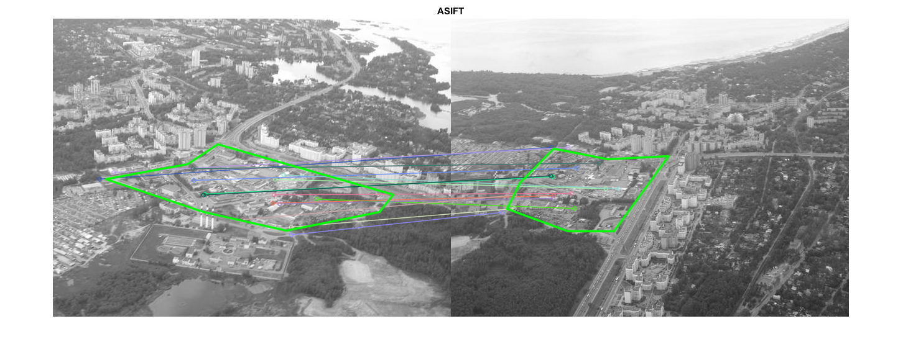

Affine invariant feature-based image matching
This sample is similar to feature_homography_demo.m, but uses the affine transformation space sampling technique, called ASIFT. While the original implementation is based on SIFT, you can try to use SURF or ORB detectors instead. Homography RANSAC is used to reject outliers.
Sources:
function asift_demo() % load input grayscale images files = { fullfile(mexopencv.root(),'test','aero1.jpg') fullfile(mexopencv.root(),'test','aero3.jpg') }; for i=1:numel(files) if exist(files{i}, 'file') ~= 2 disp('Downloading...') url = 'https://cdn.rawgit.com/opencv/opencv/3.2.0/samples/data/'; [~,fname,ext] = fileparts(files{i}); urlwrite([url fname ext], files{i}); end end img1 = cv.imread(files{1}, 'Grayscale',true); img2 = cv.imread(files{2}, 'Grayscale',true); % ASIFT [vis, H] = run_asift(img1, img2, 'BRISK', true); imshow(vis), title('ASIFT') % interactive exploration if ~mexopencv.isOctave() && mexopencv.require('images') % interactively select region in img1 pos1 = select_poly(gca) - 1; if isempty(pos1), return; end % apply homography pos2 = cv.perspectiveTransform(pos1, H); pos2(:,1) = pos2(:,1) + size(img1,2); % draw region in img1 and transformed region in img2 vis = cv.polylines(vis, pos1, 'Closed',true, ... 'Color',[0 255 0], 'Thickness',2, 'LineType','AA'); vis = cv.polylines(vis, pos2, 'Closed',true, ... 'Color',[0 255 0], 'Thickness',2, 'LineType','AA'); imshow(vis), title('ASIFT') end end function [vis, H] = run_asift(img1, img2, feature_name, use_flann) %RUN_ASIFT Run ASIFT algorithm, estimate homography and visualize matches % create detector and matcher objects [detector, matcher] = init_feature(feature_name, use_flann); % detect features using ASIFT method disp('Detecting...') tic, [kp1, desc1] = affine_detect(detector, img1); toc tic, [kp2, desc2] = affine_detect(detector, img2); toc fprintf('img1: %d features, img2: %d features\n', numel(kp1), numel(kp2)); % match ASIFT features disp('Matching...') tic, matches = matcher.knnMatch(desc1, desc2, 2); toc fprintf('%d matches\n', numel(matches)); % filter matches [matches, p1, p2] = filter_matches(kp1, kp2, matches); fprintf('%d good matches\n', numel(matches)); assert(numel(matches) >= 4, 'not enough matches for homography estimation'); % estimate homography with RANSAC method [H,inliers] = cv.findHomography(p1, p2, 'Method','Ransac'); assert(~isempty(H), 'homography estimation failed'); inliers = logical(inliers); fprintf('%d inliers\n', nnz(inliers)); % visualize good and inlier matches vis = cv.drawMatches(img1, kp1, img2, kp2, matches, ... 'NotDrawSinglePoints',true, 'MatchesMask',inliers); end function [detector, matcher] = init_feature(feature_name, use_flann) %INIT_FEATURE Create detector and matcher objects % detector switch upper(feature_name) case 'SURF' detector = cv.SURF('HessianThreshold',400); case 'SIFT' detector = cv.SIFT(); case 'ORB' detector = cv.ORB(); case 'BRISK' detector = cv.BRISK(); case 'AKAZE' detector = cv.AKAZE(); case 'KAZE' detector = cv.KAZE(); otherwise error('unrecognized feature: %s', feature_name) end % matcher if use_flann if ~isempty(strfind(detector.defaultNorm(), 'Hamming')) opts = {'LSH', 'TableNumber',6, 'KeySize',12, 'MultiProbeLevel',1}; else opts = {'KDTree', 'Trees',5}; end matcher = cv.DescriptorMatcher('FlannBasedMatcher', 'Index',opts); else matcher = cv.DescriptorMatcher('BFMatcher', ... 'NormType',detector.defaultNorm()); end end function [kpts, descs] = affine_detect(detector, img, mask) %AFFINE_DETECT Affine-SIFT (ASIFT) algorithm % % [kpts, descs] = affine_detect(detector, img) % [kpts, descs] = affine_detect(detector, img, mask) % % ## Input % * __detector__ detector object % * __img__ input image % * __mask__ optional mask, default all image included % % ## Output % * __kpts__ concatenated keypoints % * __descs__ corresponding concatenated descriptors % % Applies a set of affine transormations to the image, detect keypoints, % and reproject them into initial image coordinates. % See: http://www.ipol.im/pub/algo/my_affine_sift/ for the details. % % default mask if not specified if nargin < 3 mask = 255 * ones(size(img,1), size(img,2), 'uint8'); end % parameter sampling: Tilt and Phi % (simulates all possible affine distortions caused by the change of % camera optical axis orientation from a frontal position) params = [1 0]; % no tilt and no rotation, thus original image for t = sqrt(2).^(1:5) % geometric series 1, a, a^2, .., a^n; a=sqrt(2), n=5 for p = 0:72/t:180-72/t % arithmetic series 0, b/t, .., k*b/t < 180; b=72 params(end+1,:) = [t, p]; end end % for each pair of distortion parameters % (this loop is candidate for parallelization, i.e parfor) N = size(params,1); kpts = cell(N, 1); descs = cell(N, 1); for i=1:N % transform image [timg, tmask, Ai] = affine_skew(params(i,1), params(i,2), img, mask); % detect features using a similarity invariant matching method (SIFT) [kp, feat] = detector.detectAndCompute(timg, 'Mask',tmask); %TODO: Remove keypoints close to the boundary of the transformed image % project keypoints from the coordinates of the rotated and tilted % image back to the original image corrdinates for j=1:numel(kp) kp(j).pt = [kp(j).pt, 1] * Ai.'; end kpts{i} = kp(:); descs{i} = feat; end % concatenate all features from all simulated images kpts = cat(1, kpts{:}); descs = cat(1, descs{:}); end function [img, mask, Ai] = affine_skew(tilt, phi, img, mask) %AFFINE_SKEW Transform image/mask by an affine distortion % % [img, mask, Ai] = affine_skew(tilt, phi, img, mask) % % ## Input % * __tilt__ tilt % * __phi__ rotation angle in degrees % * __img__ image % * __mask__ mask % % ## Output % * __img__ transformed image % * __mask__ transformed mask % * __Ai__ affine transform matrix from output/skewed `img` to input `img` % % initialize affine transformation matrix (identity) A = eye(2,3); [h,w,~] = size(img); % in the case of (tilt=1, phi=0), then no transformation (identity) if phi ~= 0 % rotate image A = [cosd(phi) -sind(phi); sind(phi) cosd(phi)]; corners = [0 0; w 0; w h; 0 h]; corners = round(corners * A.'); rect = cv.boundingRect(corners); A(:,3) = -rect(1:2); img = cv.warpAffine(img, A, 'DSize',rect(3:4), ... 'Interpolation','Linear', 'BorderType','Replicate'); end if tilt ~= 1 % anti-aliasing filtering in the vertical direction, then tilt image % (subsample in vertical direction by a factor of tilt) s = 0.8 * sqrt(tilt^2 - 1); img = cv.GaussianBlur(img, 'KSize',[0 0], 'SigmaX',s, 'SigmaY',0.01); img = cv.resize(img, 1/tilt, 1, 'Interpolation','Nearest'); A(1) = A(1) / tilt; end if phi ~= 0 || tilt ~= 1 % apply same transformation on mask [h,w,~] = size(img); mask = cv.warpAffine(mask, A, 'DSize',[w h], 'Interpolation','Nearest'); end % inverse affine transformation Ai = cv.invertAffineTransform(A); end function [matches, p1, p2] = filter_matches(kp1, kp2, matches, ratio) %FILTER_MATCHES Filter out 2-NN matches using Lowe's ratio test if nargin < 4, ratio = 0.75; end % good matches idx = cellfun(@(m) (numel(m) == 2) && ... (m(1).distance < ratio * m(2).distance), matches); matches = cellfun(@(m) m(1), matches(idx)); % corresponding points p1 = cat(1, kp1([matches.queryIdx]+1).pt); p2 = cat(1, kp2([matches.trainIdx]+1).pt); end function pos = select_poly(ax) %SELECT_POLY Select polygon area using the mouse % % pos = select_poly() % pos = select_poly(ax) % % ## Input % * __ax__ axes handle, default gca % % ## Output % * __pos__ Nx2 matrix of points % if nargin < 1, ax = gca; end hRoi = impoly(ax); api = iptgetapi(hRoi); try api.setColor('green'); api.setPositionConstraintFcn(makeConstrainToRectFcn('impoly', ... get(ax,'XLim').*[1 0.5], get(ax,'YLim'))); pos = wait(hRoi); catch pos = zeros(0,2); end delete(hRoi); end
Detecting... Elapsed time is 2.437649 seconds. Elapsed time is 1.939506 seconds. img1: 25629 features, img2: 17387 features Matching... Elapsed time is 3.822513 seconds. 25629 matches 89 good matches 16 inliers